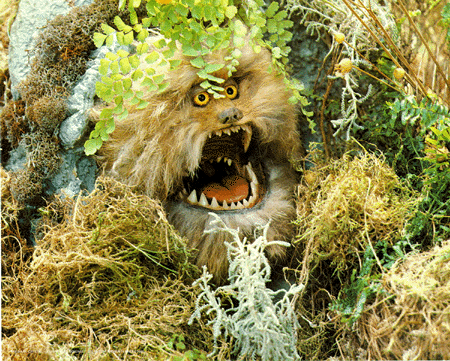

Gelphling
Kira (left) and Jen (right) are the only survivors of a Gelphling genocide performed by the Skeksis. Jen has been raised by the Mystics and taught reading, writing, and history. He also learns of the prophecy for a Gelphling to find the shard and heal the Dark Crystal and that he is that Gelphling, uniting everything once again. Kira has been raised by the Podlings, a happy race often prayed upon by the Skeksis. When the Skeksis killed Kira's family, the Podlings took her in.In the image, Kira is holding her pet named Fizzgig. (Isn't he cute!) Although the hero of the story, Jen really isn't the brightest of the duo. Kira saves his life numerous times, from swamps, from Skeksis, from the Skeksis servants: Crystal Bats and Garthims. Kira can fly, talk with animals, and understands the prophecy and dangers much better than her counterpart. |

Fizzgig
Here is Fizzgig throwing a tantrum when Kira says he must stay home. |